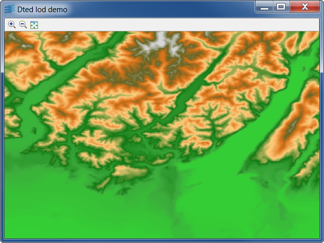

Sample: dtedview
DTED Viewer
DTED Viewer with Load On Demand implementation.

This sample shows how to read DTED files with
Rogue Wave Views.
Using the Sample
You can launch the sample without any argument. In this
case, the sample will load a single file located in
the data directory.
To show the Load-On-Demand mechanism in action, you must
provide a directory name as argument which must point to a
valid DTED file set. See About the DTED format
to know how to find some data.
You can also specify a URL as argument
to the sample.
About the DTED Format
The DTED format (Digital Terrain Elevation Data) is a map format for terrain
elevations published by the US National Imagery and Mapping Agency (NIMA).
The specifications of the DTED format are public, and can be downloaded
from the following URL:
http://www.everyspec.com/MIL-PRF/MIL-PRF-080000-99999/MIL-PRF-89020B_25316
DTED files are available at different precision levels, called DTED0,
DTED1, and DTED2.
In this demonstration, we provide a sample DTED file of low precision
(DTED0). Other samples of DTED files can be downloaded from
the Geospatial Engine.
Classes involved:
IlvDTEDLayerIlvDTEDReader
Source files: